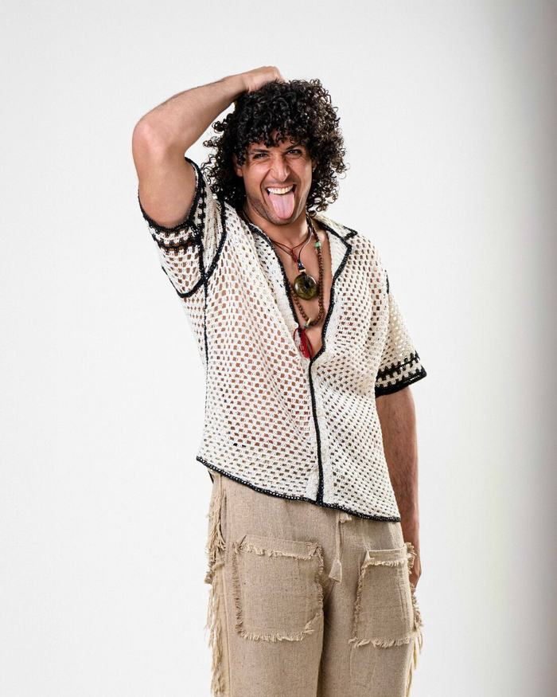
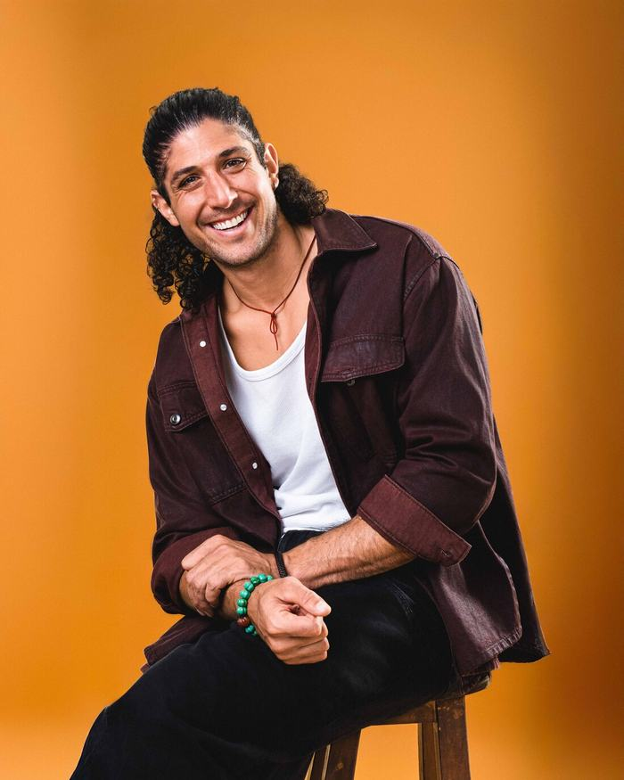

Lo que todo actor se pregunta antes de su book
Precios, looks, tiempos y qué sigue después de las fotos. Respuestas claras, en cristiano y de cafecito.
¿Cuánto cuesta un book de actor en CDMX?
Un book de actor en CDMX con Monty Experience va de $6,600 a $16,000 MXN. Qué incluye cada rango y qué mueve el precio.

¿Cada cuánto debes actualizar tu book de actor?
No hay un número mágico de años: hay señales. Cómo saber si tu book de actor ya no te representa y cuándo toca renovarlo.

¿Qué ropa llevar a tu sesión de fotos de actor?
Cuántos looks llevar y cómo elegirlos para tu book de actor: colores, texturas y cambios de ropa según tu experiencia.
Book técnico o retrato conceptual: ¿cuál necesita un actor?
Qué es un book técnico, qué es un retrato conceptual y cuándo necesita cada uno un actor. Spoiler: no compiten, se complementan.
Ya tengo mi book de actor, ¿ahora qué hago?
Un book solo no consigue castings. Las tres decisiones que sí lo mueven: dónde usar cada foto, a qué castings ir y cómo presentarte.

¿Cuánto dura una sesión de fotos para actores y qué esperar?
De 1 a 5 horas según la experiencia. Qué pasa antes, durante y después de una sesión de book para actores en CDMX.